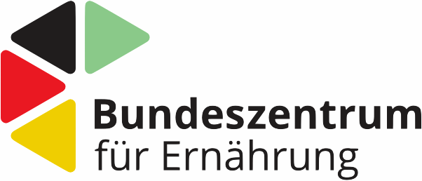
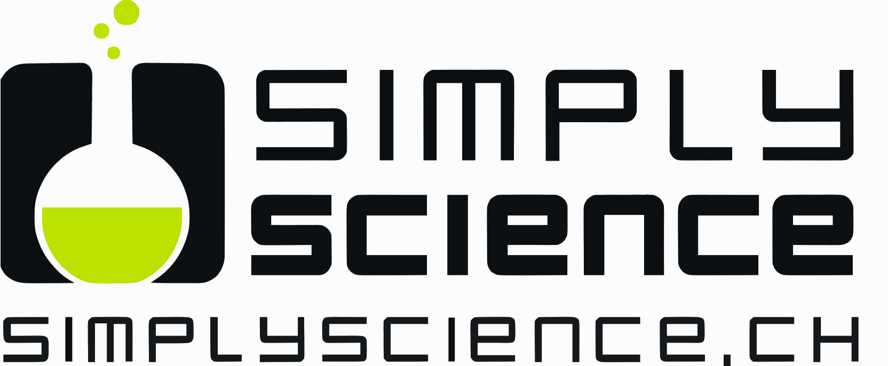

Quellen
Die Texte der Apotheken-Umschau in einfacher Sprache behandeln medizinische Themen (Krankheiten, Medikamente, Gesundheitssystem u.a.) und geben den Leser:innen Verhaltenstipps. Zielgruppe sind Erwachsene, bei denen eine eingeschränkte Lesekompetenz vermutet wird.
Das Bundeszentrum für Ernährung bietet Texte in einfacher Sprache für Erwachsene an. Die Texte enthalten Informationen und Tipps zu den Themen Gut essen, Einkaufen, Kochen & Aufbewahren und Familie.

Dein Spiegel ist ein monatlich erscheinendes Nachrichtenmagazin, das sich an junge Leser:innen ab acht Jahren richtet und die Themenbereiche Natur, Menschen, Technik, Politik und Gesellschaft abdeckt.
fluter ist ein Jugendmagazin der Bundeszentrale für politische Bildung und erscheint als Print- und Onlineversion. Im Mittelpunkt des Jugendmagazins stehen politische und gesellschaftliche Themen, die junge Menschen bewegen. Für das KED haben wir argumentative Pro-Contra-Texte ausgewählt.
Die Comicreihe HanisauLand führt Kinder im Alter von 8 bis 14 Jahren in die Welt der Politik ein. In einfacher und kindgerechter Sprache werden Informationen aus Politik und Gesellschaft für Kinder und Jugendliche verständlich aufbereitet.

Das internet-abc ist eine interaktive Lernplattform für Kinder von fünf bis zwölf Jahren mit dem Ziel, deren Medienkompetenz zu entwickeln und zu fördern. Die Plattform enthält Erklärtexte und ein Lexikon rund um das Thema Internet.
Die Texte auf der Seite Kids&Science: Erklärtexte vermitteln Wissen über Naturwissenschaften und Technik für Kinder und Jugendliche als Zielgruppe.
Die Texte auf der Seite Kids&Science: Experimente leiten Kinder bei naturwissenschaftlichen Experimenten für zu Hause an.
Die Website Kindersache bietet kindgerechte Texte, die Kinder zwischen 8 und 13 Jahren über Kinderrechte informieren. Darüber hinaus wird Wissen zu den Themen Natur, Mensch, Politik und Medien vermittelt.
Klexikon ist ein Online-Lexikon für Kinder zwischen 5 und 15 Jahren, eine Art Wikipedia für Kinder. Das Kinderlexikon enthält Artikel zu allen möglichen Themen, die Kinder interessieren.
Das Lexikoneinträge auf der Kuppelkucker: Lexikon-Seite des Deutschen Bundestages erklären Begriffe und Fachausdrücke rund um den Deutschen Bundestag.
Die Nachrichtentexte auf der Kuppelkucker: Nachrichten-Seite des Deutschen Bundestages berichten aktuelle politische Nachrichten in verständlicher Sprache. Die Nachrichtentexte richten sich an Kinder im Alter von fünf bis zwölf Jahren.
Die Seite Politik einfach für alle bietet Texte zu politischen Themen in einfacher Sprache für Deutschlernende und Erwachsene mit eingeschränkter Lesekompetenz.
Das Lexikon einfach Politik der Bundeszentrale für politische Bildung enthält zahlreiche Stichwörter zu politischen Themen, die in kurzen Erklärungen in einfacher Sprache erläutert werden.
Die Texte auf der Internetseite Recht Kinderleicht erklären rechtliche Begriffe für Kinder. Die Texte umfassen die Rechtsgebiete Kaufen und andere Verträge, Delikte und Strafrecht, Familie, Eigentum und Erbrecht sowie Der Staat und wir.
Das interaktive Magazin Scroller präsentiert Texte zum Umgang mit digitalen Medien (Datenschutz, Fakt oder Fake?, Faszination KI…). Das Magazin richtet sich an Kinder und soll zur Förderung einer sicheren und kompetenten Mediennutzung beitragen.
Auf der Seite SimplyScience Kids: Experimente finden sich naturwissenschaftliche Experimente für Kinder zum Selbermachen. Die Experimente werden zielgruppengerecht angeleitet und erklärt.
Auf der Seite SimplyScience Teens: Wissen werden naturwissenschaftliche und technische Fragen für Jugendliche beantwortet. Themen sind z.B. Tiere & Pflanzen, Zellen & Moleküle, Technik & Materialien oder Farben & Klänge.
Auf der Seite SimplyScience Teens: Experimente finden sich naturwissenschaftliche Experimente für Jugendliche zum Selbermachen. Die Experimente werden zielgruppengerecht angeleitet und erklärt.

© Daniel Jach und Gunther Dietz 2025. All rights reserved. | Impressum